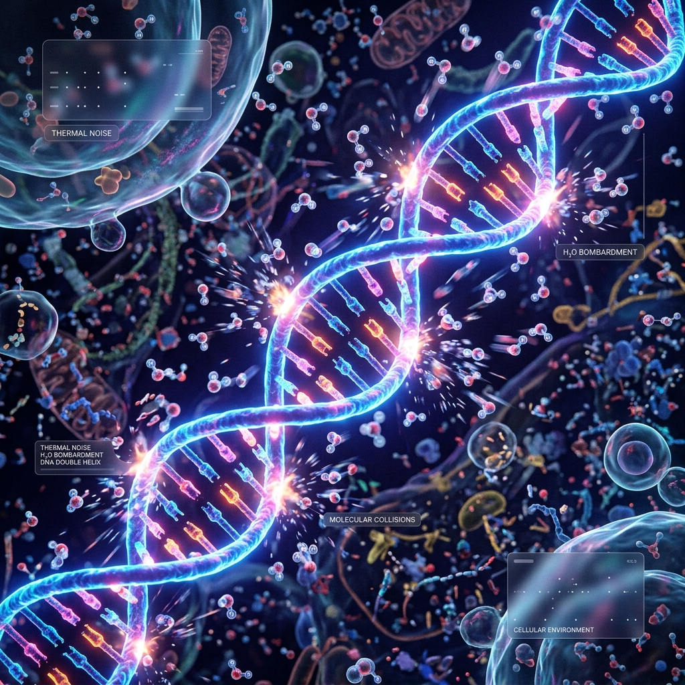
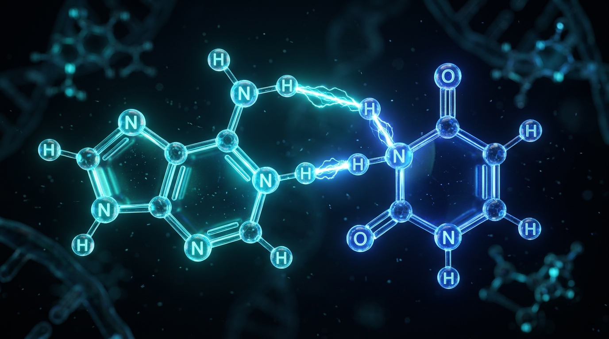
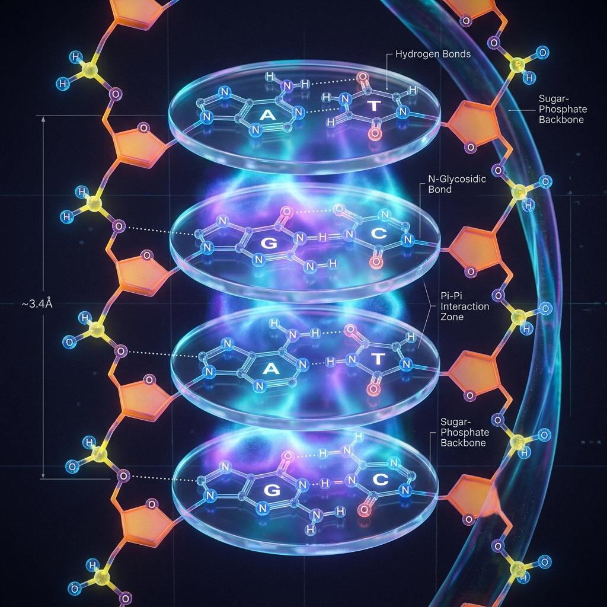
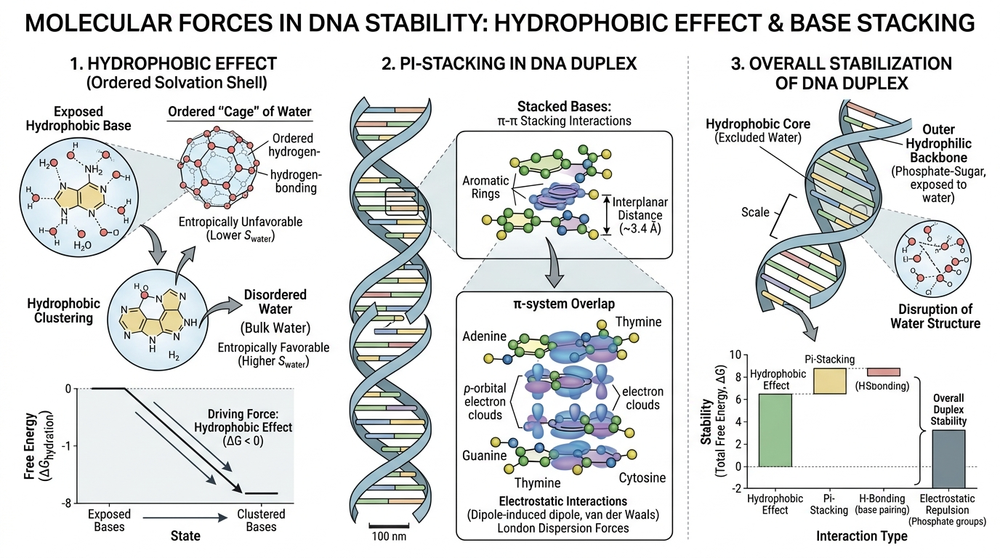
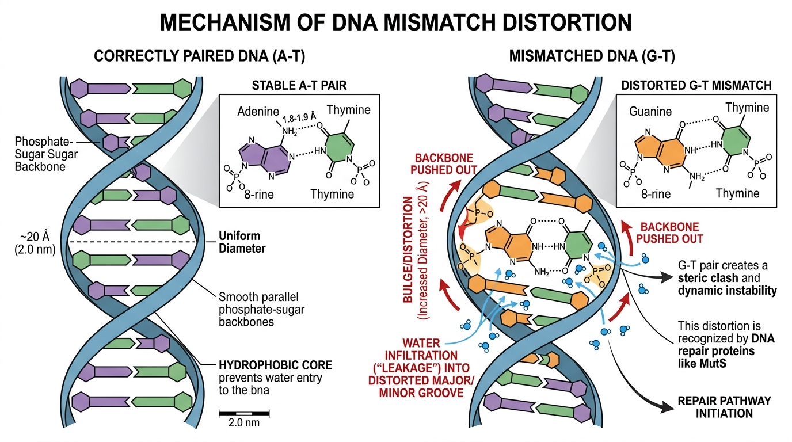
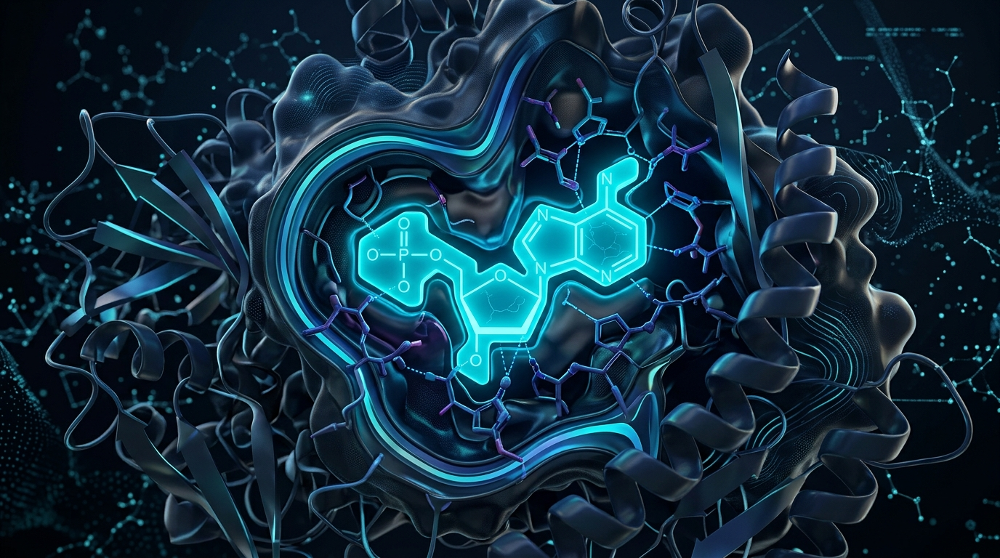
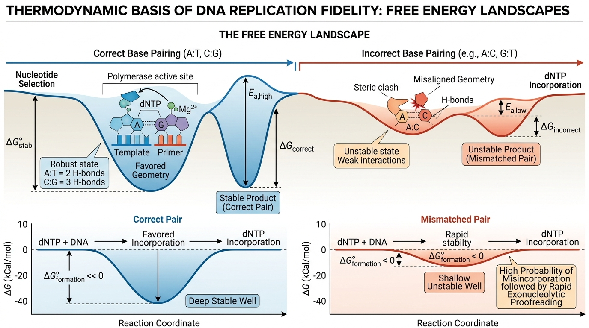
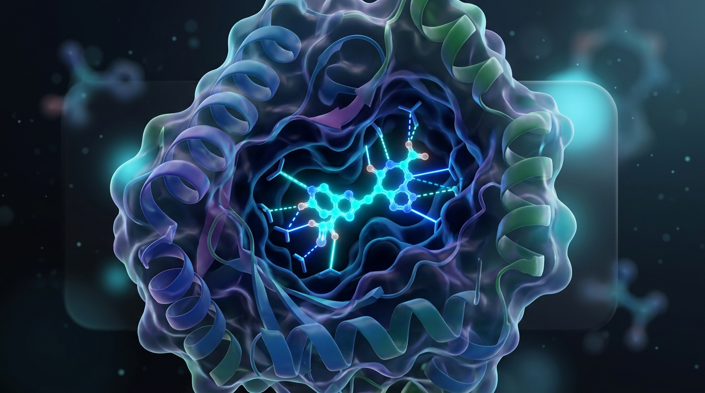
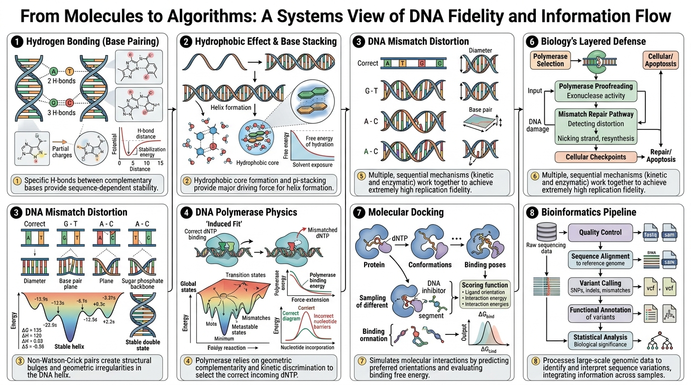

Topic 4
Fidelity Begins Before Biology
The Physics and Chemistry of Accurate DNA Replication
Why This Matters
When most people think about DNA replication fidelity, they think about:
- DNA Polymerase
- Proofreading
- Mismatch Repair
But fidelity actually begins before any enzyme acts. It begins with the laws of chemistry and physics.
DNA polymerase is not "smart." It does not recognize letters like A, T, G, or C. Instead, it exploits the fact that correct base pairs are naturally more stable than incorrect ones because of their physical and chemical properties.
This means replication fidelity is built in layers:
↓
Chemistry
↓
Thermodynamics
↓
DNA Polymerase
↓
Proofreading
↓
Mismatch Repair
↓
Near-perfect genome replication
Every later fidelity mechanism builds upon these fundamental physical principles. Inside a living cell, DNA is constantly bombarded by water molecules moving at high speeds—a chaotic environment governed by thermal noise. Physics acts as the very first filter in this chaos, ensuring only the most energetically stable pairs survive long enough to be linked.

Why Should a Bioinformatician Care?
As bioinformaticians, we rarely watch DNA replicate. Instead, we analyze:
- FASTQ files
- BAM files
- VCF files
- Genome assemblies
- Protein structures
- Drug molecules
Yet every computational analysis assumes that DNA obeys these chemical rules. If these physical principles failed, almost every downstream bioinformatics algorithm would become unreliable.
Understanding the chemistry explains why genomes remain stable, why sequencing works, and why true mutations are rare.
Where Does This Fit?
↓
Chemical Base Pairing
↓
Thermodynamic Stability
↓
DNA Polymerase Selection
↓
Proofreading
↓
Mismatch Repair
↓
High-Fidelity Genome
↓
Sequencing
↓
Bioinformatics
Step 1 — DNA Bases Naturally Prefer Certain Partners
DNA consists of four bases: A, T, G, C. They pair specifically: A ↔ T and G ↔ C.
But why? Not because biology decided so. Because these combinations are:
- chemically optimal
- physically compatible
- energetically favorable
Nature simply follows the lowest-energy arrangement.

The Three Major Chemical Forces Behind Fidelity
Every base pair is stabilized by three major interactions.
1. Hydrogen Bonding
Hydrogen bonds provide specificity. Correct pairs line up perfectly.
●···●
●···●
G C
●···●
●···●
●···●
The donor and acceptor atoms are perfectly positioned. Maximum hydrogen bonding occurs.
Now imagine A ↔ C. The atoms no longer align. Some hydrogen bonds disappear. Others become weak. Some atoms even repel each other. The interaction becomes unstable.
2. Base Stacking
Many students think hydrogen bonds are what mainly stabilize DNA. Surprisingly, base stacking contributes even more. DNA bases are flat aromatic rings. Imagine stacking coins.
○
○
○
Everything stacks neatly. Electron clouds overlap. The molecule becomes stable. This overlap creates strong London dispersion forces and pi-pi interactions between the aromatic rings. Now insert an uneven object (○ △ ○). The stack becomes distorted. The overlapping pi-electron clouds break apart, energy increases, and the helix becomes slightly unstable.

3. Hydrophobic Effect
This is one of the most important—and often misunderstood—concepts in molecular biology. DNA exists inside water. Water molecules constantly form hydrogen bonds with each other. DNA bases are hydrophobic (water-fearing) aromatic molecules.
Water "doesn’t like" exposing these non-polar surfaces because it disrupts its own hydrogen-bonding network. Therefore, correct DNA folds so that:
Sugar-phosphate backbone ↓ Faces water
This arrangement minimizes the system’s free energy. It is energetically favorable.

What Happens During a Mismatch?
Suppose G pairs with T. The bases no longer fit perfectly. One base tilts. Another rotates. The helix bends slightly.
This distortion exposes hydrophobic surfaces that normally remain buried. Water molecules must now rearrange around these exposed regions. This decreases the disorder (entropy) of the surrounding water because water molecules form ordered “cages” around exposed hydrophobic surfaces.
Creating this ordered shell costs energy. Therefore, the total free energy of the DNA-water system increases. The mismatch becomes thermodynamically unfavorable.

The Physics Perspective
DNA polymerase does not recognize A, T, G, C. It measures:
- molecular shape
- bond angles
- distances
- atomic geometry
Imagine a precision factory manufacturing gears. Every gear must fit within a tolerance of a fraction of a millimeter. One incorrect tooth ↓ Machine jams.
DNA polymerase functions similarly. Its active site is a nanoscale measuring instrument. Only nucleotides with correct bond angles, spacing, and orientation fit properly. This is Physics. Not intelligence.

Thermodynamics & Gibbs Free Energy (ΔG)
Everything Tends Toward the Lowest Free-Energy State
Imagine a marble. It rolls from the top of the hill to the bottom. Chemical systems behave similarly. Correct DNA pairs occupy lower-energy states. Incorrect pairs occupy higher-energy states. Therefore, correct pairing happens naturally more often.
Understanding ΔG
ΔG (Gibbs Free Energy) tells us whether a molecular interaction is energetically favorable. Think of it as the "cost" of a molecular arrangement.
- Lower ΔG → More stable → More likely to occur
- Higher ΔG → Less stable → Less likely to occur
Incorrect A-C pair: ΔG = -8 kcal/mol (Less stable)
What is ΔΔG (Double Delta G)?
ΔG describes the stability of one interaction. ΔΔG compares two interactions:
If Correct ΔG = -10 kcal/mol and Incorrect ΔG = -8 kcal/mol, then ΔΔG = (-8) - (-10) = +2 kcal/mol.
The positive value means the incorrect pair requires 2 kcal/mol more energy than the correct one. That sounds tiny, but at the molecular scale, it is enormous. Because billions upon billions of molecular collisions occur every second, even a 1–3 kcal/mol difference shifts the probability dramatically toward the correct base.
Nature doesn’t need perfect discrimination. A small energy advantage, repeated billions of times, produces highly accurate replication. This relationship is mathematically defined by the Boltzmann Distribution, which states that the probability of a molecular state decreases exponentially as its energy cost increases. A mere 2 kcal/mol difference translates into a massive exponential drop in the probability of a mismatch occurring!

Error Rate & Biology's Layered Defense
Imagine two doors. Door A requires almost no effort to open. Door B requires a little extra push. Almost everyone naturally chooses Door A. Molecules behave the same way.
Only rarely does enough thermal energy exist to stabilize G-T, A-C, or C-T. Therefore, chemistry alone already achieves 1 error per 100–1000 bases before polymerase proofreading even begins.
Why Isn’t Chemistry Alone Enough? A human genome contains 3.2 billion bases. If chemistry alone were responsible, we would obtain millions of replication errors every cell division.
↓
DNA Polymerase
↓
Proofreading
↓
Mismatch Repair
↓
1 error per 10 billion bases
Biotechnology Connection
These exact chemical principles are used every day in biotechnology:
- PCR: PCR primers bind DNA only if ΔG is sufficiently favorable. Primer-design software uses Nearest-Neighbor Thermodynamics to calculate melting temperatures (Tm) and ΔG before any physical experiment begins.
- DNA Hybridization: Southern blot, Northern blot, Microarrays, and FISH all depend upon complementary strands having lower free energy than mismatches.
- CRISPR: Guide RNA searches for DNA. Correct complementarity → Low ΔG → Stable binding → DNA cleavage.
- DNA Sequencing: Illumina, PacBio, Nanopore all rely upon predictable nucleotide recognition. Correct Watson-Crick chemistry makes base calling possible.
Drug Discovery Connection (Structural Bioinformatics)
This same chemistry becomes even more important in structural biology and drug discovery. When we perform molecular docking, virtual screening, molecular dynamics, or protein-ligand interaction analysis, we ask exactly the same question: How stable is the interaction between two molecules?
Hydrogen Bonds
Docking software evaluates: Drug ↓ Hydrogen bond ↓ Protein residue
Strong hydrogen bonds result in lower binding free energy and better binding affinity. Programs such as AutoDock Vina, Glide, GOLD, and Rosetta all score hydrogen bonds as part of their binding-energy calculations.
Hydrophobic Interactions
A drug with matching hydrophobic groups fits into a protein's hydrophobic pocket. Water molecules are released back into the surrounding solution, increasing entropy (disorder) of the water, which is energetically favorable and strengthens binding. This is the same hydrophobic effect that stabilizes DNA.
Molecular Docking
Docking programs search for the lowest-energy pose. The best docking pose is usually the one with optimal hydrogen bonding, favorable hydrophobic interactions, minimal steric clashes, and optimal electrostatic interactions—exactly the same physical principles that determine DNA base pairing.
Molecular Dynamics
In molecular dynamics simulations, we observe whether the protein-drug complex remains stable over time. If interactions weaken, ΔG increases and the drug dissociates. If interactions remain favorable, the complex remains bound. This is governed entirely by physics and chemistry.

Bioinformatics Connection & The Complete Pipeline
Now imagine these chemical principles stopped working. Suppose 1 error per 10 bases instead of 1 in 1000. Everything downstream changes:
1. Variant Calling
Variant callers assume most bases are correct. If chemistry became inaccurate, the software could never distinguish true mutation vs replication mistake vs sequencing artifact. False positives would increase dramatically.
2. Genome Assembly
Assemblers rely on overlapping reads. Random replication errors would create conflicting overlaps, producing fragmented and ambiguous assemblies.
3. Read Mapping
Alignment algorithms (BWA, Bowtie2, Minimap2) assume only a few differences between a read and the reference. Higher replication error rates would reduce mapping quality and increase ambiguous alignments.
4. Comparative Genomics & Evolution
If chemistry produced many random errors, homologous genes would appear far more different than they really are, making ortholog detection and phylogenetic inference much less reliable.
The Complete Computational Pipeline
↓
Hydrogen Bonding / Base Stacking / Hydrophobic Effect
↓
ΔG & ΔΔG → Correct Base Pairing
↓
DNA Polymerase, Proofreading, Mismatch Repair
↓
Stable Genome
↓
Sequencing → FASTQ Reads
↓
Read Mapping → Genome Assembly → Variant Calling
↓
Comparative Genomics & Evolutionary Analysis
↓
Structural Bioinformatics & Drug Discovery
↓
Biological Discovery
The key idea is that bioinformatics begins long before a sequencing machine generates reads. Every FASTQ file, every VCF, every protein structure, and every docking simulation depends on fundamental physical laws.
Master Systems Overview
A unified, textbook-quality visualization connecting all 8 thermodynamic and computational concepts.
